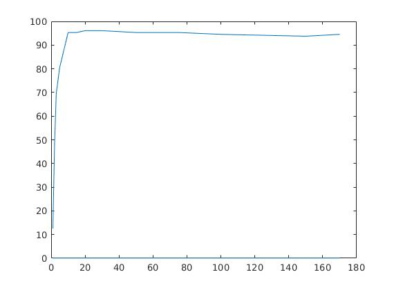
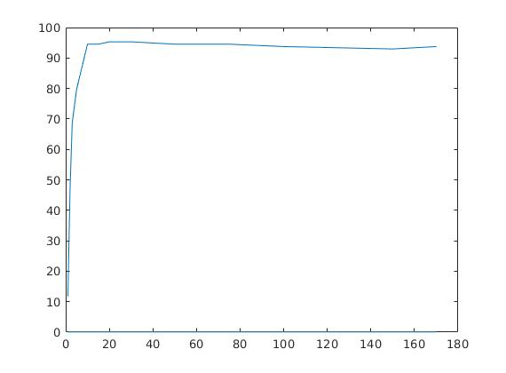
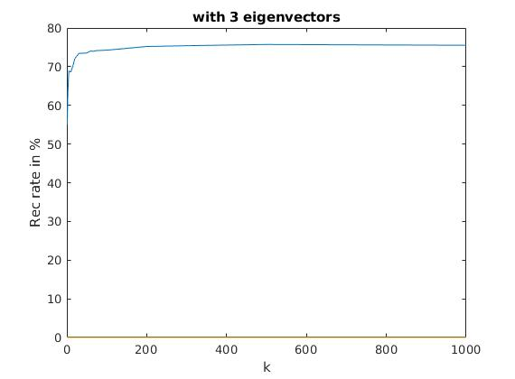
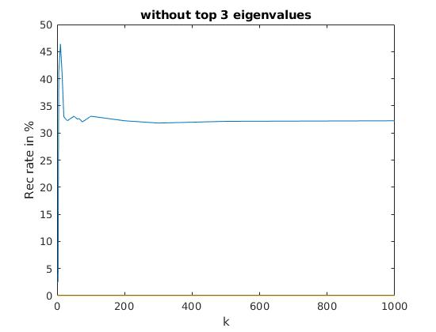

Contents
ORL svd
Parameters
arr = [1, 2, 3, 5, 10, 15, 20, 30, 50, 75, 100, 150, 170]; len_arr = length(arr); w = 112; h = 92; numF = 32; #num of folders numTrain_img = 6; numTest_img = 4;
graph
ORL eig
Parameters
arr = [1, 2, 3, 5, 10, 15, 20, 30, 50, 75, 100, 150, 170]; len_arr = length(arr); w = 112; h = 92; numF = 32; #num of folders numTrain_img = 6; numTest_img = 4;
graph
YALE svd without any change
Parameters
arr = [1, 2, 3, 5, 10, 15, 20, 30, 50, 60, 65, 75, 100, 200, 300, 500, 1000]; len_arr = length(arr); w = 192; h = 168; numF = 38; numTrain_img = 40; numTest_img = 24; num_faces = [1:13,15:39];
Values
55.0420 61.4496 64.4958 68.9076 68.5924 70.1681 72.0588 73.4244 73.5294 74.0546 73.9496 74.1597 74.2647 75.2101 75.4202 75.7353 75.5252
graph

YALE without 3 eigens
Parameters
arr = [1, 2, 3, 5, 10, 15, 20, 30, 50, 60, 65, 75, 100, 200, 300, 500, 1000]; len_arr = length(arr); w = 192; h = 168; numF = 38; numTrain_img = 40; numTest_img = 24; num_faces = [1:13,15:39];Values
55.0420 61.4496 64.4958 68.9076 68.5924 70.1681 72.0588 73.4244 73.5294 74.0546 73.9496 74.1597 74.2647 75.2101 75.4202 75.7353 75.5252graph
